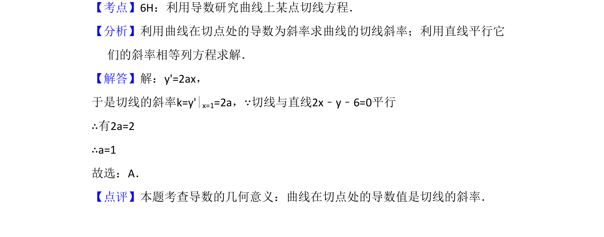

考点：导数 切线
曲线y=ax²在点(1,a)处切线与直线2x-y-6=0平行，利用导数等于斜率求参数a。

📄 原 PDF 第 4 页：
素材/真题/吉林/2008-2024·（吉林）数学高考真题/2008年高考数学试卷（文）（全国卷Ⅱ）（解析卷）.pdf
7．（5分）设曲线y=ax2在点（1，a）处的切线与直线2x﹣y﹣6=0平行，则a=（ ） A．1 B．C．D．﹣1
【考点】6H：利用导数研究曲线上某点切线方程．菁优网版权所有 【分析】利用曲线在切点处的导数为斜率求曲线的切线斜率；利用直线平行它 们的斜率相等列方程求解． 【解答】解：y'=2ax， 于是切线的斜率k=y'|x=1=2a，∵切线与直线2x﹣y﹣6=0平行 ∴有2a=2 ∴a=1 故选：A． 【点评】本题考查导数的几何意义：曲线在切点处的导数值是切线的斜率．